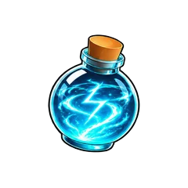
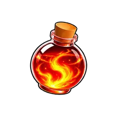
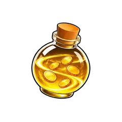
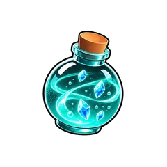
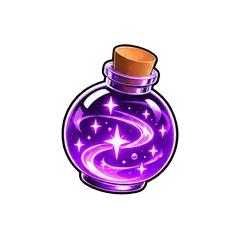
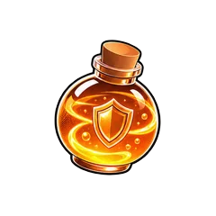
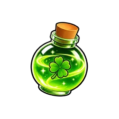
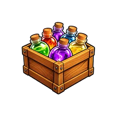
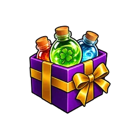
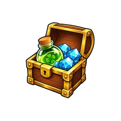

Potions
Potions give you a boost for 15 minutes. There are seven types, and each one boosts one thing.
Potion Types
| Potion | What it boosts |
|---|---|
 Energy | Energy per click |
 Battle Tonic | Damage |
 Coins | Coins from kills |
 Drop | World tokens, herbs and Forge Core from kills |
 Exp | Experience from kills |
 Hero Token | Hero Tokens from bosses |
 Luck | Your chance of rare pets, and of swords and auras from bosses |
Sizes
Every type comes in three sizes. Size changes the boost, not the time.
| Size | Boost | Time |
|---|---|---|
| S | ×1.5 | 15 minutes |
| M | ×2 | 15 minutes |
| L | ×2.5 | 15 minutes |
How Potions Work
- Potions of different types work at the same time.
- Potions of the same type don't multiply. Each one adds 15 more minutes to a queue.
- The strongest potion in the queue always goes first. If you drink an M while an S is running, the M starts right away and the rest of the S waits.
- The queue has no limit.
- The timer only runs while you are in the game. When you come back, it picks up where it stopped.
- Tap a running potion's icon to pause it, and tap again to unpause. While paused, the timer stops and the boost is off. A pause stops that whole type, including its queue.
- Potions take no inventory space, so you can keep as many as you like. You can't delete or lock them.
Brewing
Brew potions from herbs at the Potion Machine in the Raid Lobby. Herbs drop from any enemy or boss in any world, about once in 32 kills, and the Drop bonus gives you more. Raids don't drop herbs.
You can only brew size S directly. Merge 3 S potions of one type into an M, and 3 M potions of one type into an L. Merging takes no herbs.
| Potion | Herbs for S | Herbs for M | Herbs for L |
|---|---|---|---|
| Coins, Drop, Exp, Hero Token | 40 | 120 | 360 |
| Energy, Battle Tonic, Luck | 60 | 180 | 540 |
Exchange Shop
Three potions are sold for Exchange Coins at the Exchange Shop.
| Potion | Price |
|---|---|
| Battle Tonic S | 600 EC |
| Battle Tonic M | 1,800 EC |
| Coins M | 1,200 EC |
Free Potions
Unless noted, the type of a free potion is random. A new game day starts at 00:00 UTC.
- Daily tasks: 1 S for finishing all daily tasks.
- Weekly tasks: 2 M for finishing all weekly tasks.
- Login rewards: 1 S on day 2 and 1 M on day 5 of the cycle.
- Daily chest: 1 S every game day.
- Group chest: 2 S every game day for joining the game's Roblox group.
- Premium chest: 2 M every game day for Roblox Premium members.
- Codes: milestone codes give 2 S, update codes 1 M, and the release code 3 M.
- Battle pass: every fifth level starting at level 3 gives 1 S on the free track and 1 M on the premium track.
- VIP chest: 1 or 2 M every game day with the VIP gamepass.
- Prestige Box: 10 M of each type for every prestige. Prestige comes after World 6, so you can't get a box yet.
Robux
| Item | What you get | Price |
|---|---|---|
| One size M potion | Any type except Drop | 49 R$ |
| One size M potion | Drop | 99 R$ |
| Ten size M potions | Any type except Drop | 490 R$ |
| Ten size M potions | Drop | 990 R$ |
 Potion bundle | 5 size M potions of each type | 899 R$ |
 Weekly potion bundle | 3 size M potions of each type, 1 per game week | 449 R$ |
 Starter bundle | 1,990 Gems and 1 size M potion of each type, once, in your first 72 hours | 149 R$ |